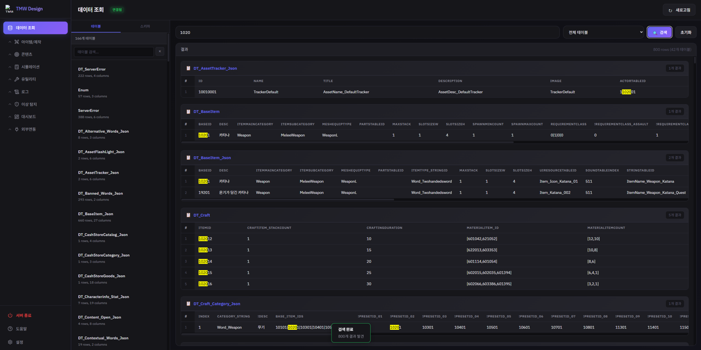
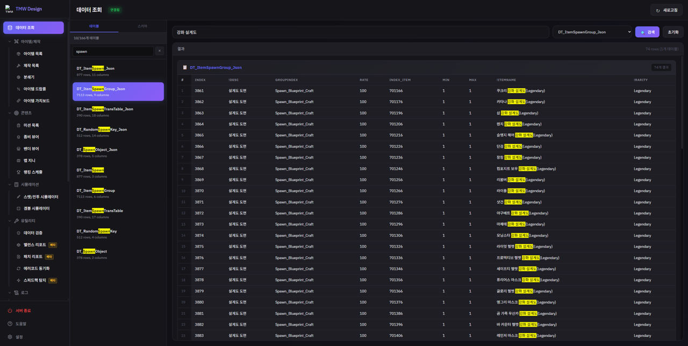

DEMO 02 · DataViewer
JSON 게임 데이터를 SQL처럼 조회하는 도구
이 도구의 핵심은 단순 조회가 아니라, 키 값 하나를 전체 테이블 대상으로 한 번에 검색해 참조 무결성을 확인하는 것이었습니다.
아이템 이름은 Item.BaseID → BaseItem.StringTableID → String.Korean 3단계를 거쳐야 완성되는데,
이 체인 어딘가가 끊기거나 안 쓰이는 데이터가 남아있어도 겉으로는 티가 안 납니다. 아래 데모는 그 체인을 재현하고,
키 검색으로 끊긴 참조·미사용 데이터를 실제로 찾아냅니다.
테이블·컬럼명·데이터는 전부 가칭으로 재구성한 샘플입니다 (실제 게임 스키마 아님).
🟠 주황색 표시 안내:
ResolvedName의 "String 없음"은 참조하는 StringTableID가
String 테이블에 없어 이름이 끊긴 데이터를, RefCount의 "0건 (미사용)"은 어떤 Item도 참조하지 않는
미사용 데이터를 뜻합니다. 실제 업무에서도 이런 표시로 대량의 테이블 중 정리가 필요한 항목을 빠르게 찾아냈습니다.
표 우측 하단 표시 개수 옆의 Error N건이 현재 탭에 몇 건의 이상이 있는지 바로 보여줍니다.
📸 실사용 예시

키 값 하나로 166개 전체 테이블을 검색해 42개 테이블·800건의 사용처를 한 번에 확인하는 실제 화면입니다.

아이템 이름으로 스폰 그룹 테이블을 검색해 해당 아이템의 실제 획득처(드랍 경로)를 추적하는 실제 화면입니다.